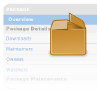
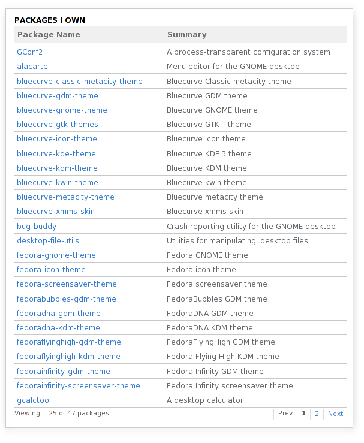
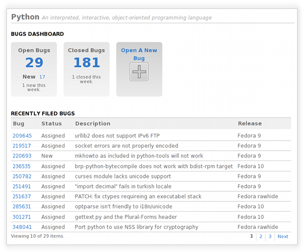
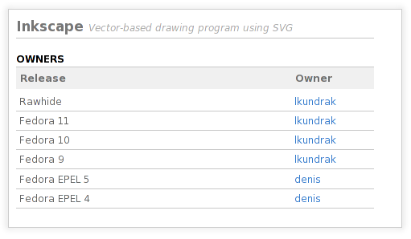
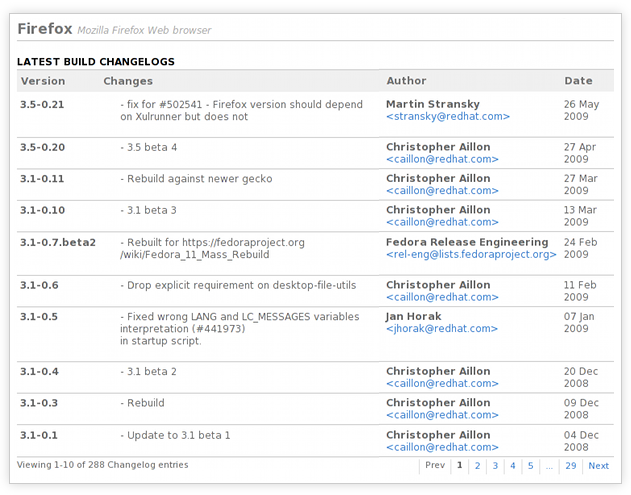
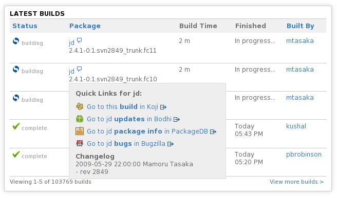
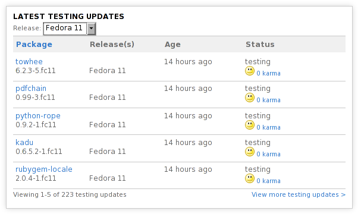
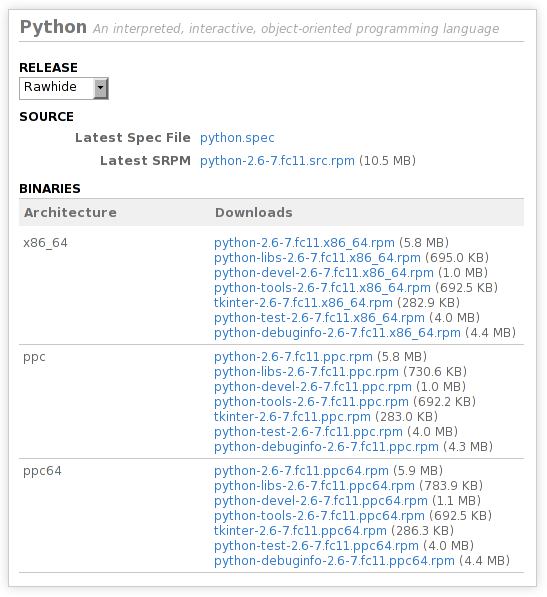
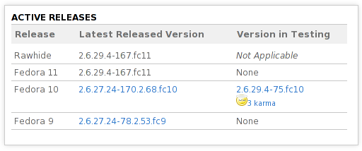

The Fedora Community Tour
There's a Lot of Packages in Fedora...
 ...And Fedora users rely on package maintainers to keep the quality of those packages high. Package maintenance is a tough job, though. Luckily, Fedora Community provides the information and tools to make package maintenance easier!
Package Details Tour Highlights:
- Keep track of the packages you own and maintain
- Stay on top of bugs with the package bugs dashboard
- Look up package owners and maintainers
- Learn about package changes through changelogs
- Monitor package builds
- Keep up with package updates
- Access package sources and downloads
- Stay straight on which package version is in what release
Keep track of the packages you own & maintain Back to Top 
Do you know just how many packages you own, total? How about for a given Fedora release? Which of your packages are in the most need of attention, right now? Fedora Community automatically tracks your inventory of packages and helps you stay on top of them!
See it in action:
You'll be able to see the view above only if you're a current package owner and/or maintainer.
- Log in to Fedora Community
- Click on "My Profile" in the left tab bar.
- Click on "Package Maintenance" in the top tab bar.
Stay on top of bugs with the package bugs dashboard Back to Top
Fedora Community provides a bugs dashboard for each package. It is a concise display of the bug information package maintainers care about the most - open bugs, newly-opened bugs, and closed bugs. The bugs dashboard also provides a list of bugs, most recently-opened bugs first, with a simple overview of each and a link out to the full bug details in case you need to investigate a particular bug further.
See it in action:
Any Fedora Community user can see this view.
- Search for "python" in the search bar at the top of Fedora Community.
- Click on "python" in the search results.
- Click on "Bugs" in the right-hand "Maintenance Tools" navigation.
Look up package owners and maintainers Back to Top
Package maintainers frequently need to interact with the owners and maintainers of other packages that are related to their own, but sometimes it can be hard to figure out who owns a particular package for the given Fedora release you're interested in. Fedora Community provides a canonical, easy-to-use list of package owners and maintainers. You can even look up which Fedora Community members are watching a given package.
See it in action:
Any Fedora Community user can see this view.
- Search for "inkscape" in the search bar at the top of Fedora Community.
- Click on "inkscape" in the search results.
- Click on "Owners" in the right-hand "Package Details" navigation.
Learn about package changes through changelogs Back to Top
Follow a package's progress through clean and simple changelog summaries. Wondering what improvements or fixes have been made to a package when trying to decide whether or not it's worth updating that package? It's all laid out in the package changelogs. If you have questions about any change that was made, the Fedora commnunity member who made each change is listed with his or her contact information.
See it in action:
Any Fedora Community user can see this view.
- Search for "firefox" in the search bar at the top of Fedora Community.
- Click on "firefox" in the search results.
- Click on "Changelog" in the right-hand "Maintenance Tools" navigation.
Monitor package builds Back to Top
Now this is really cool. Not only can you watch live as packages are submitted and fail or succeed across all of Fedora, but you can also view the corresponding changelog for each build in-line. So, if you notice a build of a package that interests you and are curious why it's being rebuilt, you can now find out why easily. You can even link to build logs for failed builds.
See it in action:
Any Fedora Community user can see this view.
- Go to the main Fedora Community front page.
- If you are not logged in, the latest builds across Fedora will already be displayed under "Latest Builds."
- If you are logged in, by default you will see only your own builds - use the "Display" dropdown to view "All Builds."
Keep up with package updates Back to Top
What new stable updates are available? What updates are available in testing right now? How well are those testing updates working for people? You can view stable and testing updates across Fedora or on a per-package basis.
See it in action:
Any Fedora Community user can see this view.
- Click on "Package Maintenance" on the left tab bar.
- Click on "Updates" on the top tab bar.
- Click on "Overview" under the "All Packages" section of the right-side "Updates" navigation.
Access package sources and downloads Back to Top
For any given package in Fedora Community, you can download spec files, sources and binaries for the latest version of that package in a given Fedora release.
See it in action:
Any Fedora Community user can see this view.
- Search for "python" in the search bar at the top of Fedora Community.
- Click on "python" in the search results.
- Click on "Downloads" in the right-hand "Package Details" navigation.
Stay straight on which package version is in which release Back to Top
Always know the exact version number per Fedora release for any given package. Each package's overview has a handy chart that makes this simple and easy to look up!
See it in action:
Any Fedora Community user can see this view.
- Search for "kernel" in the search bar at the top of Fedora Community.
- Click on "kernel" in the search results.
- This view is available under the "Active Releases" heading on the main package "Overview" tab.
Now that you've learned more about packages in Fedora Community...
You can go back to the main tour page and learn more about other parts of Fedora Community.